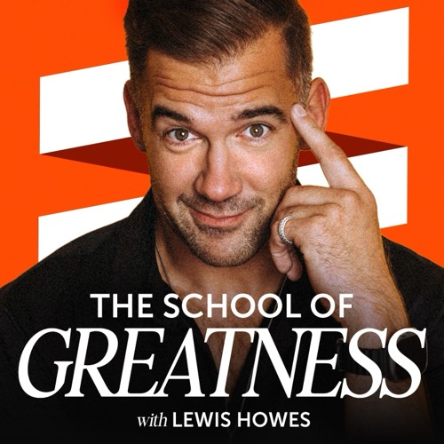
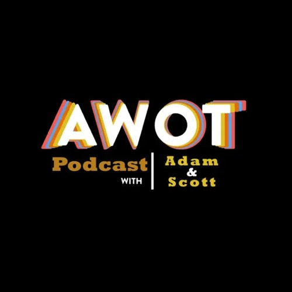
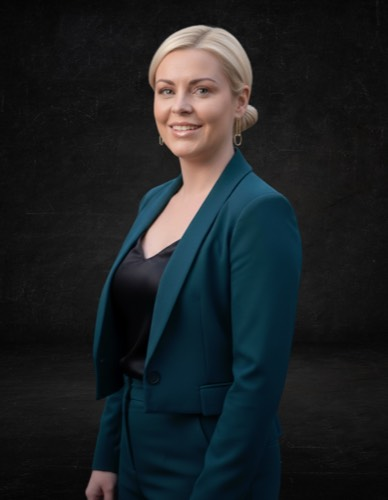

We make every podcast episode earn.
The one you publish next week, and the hundreds you've already made.
Your next untapped revenue stream is already recorded.
Old episodes don't stop being valuable. They just get harder to find. We fix the titles, rewrite the show notes and transcribe every episode in your back catalog. Then we don't hand you a document and leave. We publish all of it ourselves, on your podcast host and on your podcast website, so listeners find your old episodes again. Then we show you which ones are paying off.
How much is sitting in your back catalog?
If your show uses dynamic ad insertion, a play of a 2016 episode carries this month's ads. More people finding old episodes means more ad revenue from episodes you've already paid to make.
$27,000
a year, or $2,250 a month
30,000 more back-catalog downloads a month
30,000 extra downloads x 3 ad spots x $25 per 1,000 = $2,250 a month. Try your own numbers. Ads are only the start: a searchable, well-titled catalog also feeds sponsor pitches, clips and premium content.
Which of these is quietly burying your episodes?
Tap the + on each one to see what goes wrong, and how we fix it.
Titles and numbers stop making sense
A rebrand here, a new producer there. Titles end up in four formats, some are only a guest's name, and episode numbers skip, repeat or vanish.
We fix it with retitling.
Show notes nobody can find
Early episodes got a sentence or a copy-pasted paragraph. Search engines and podcast apps have nothing to go on, so those episodes stay invisible.
We fix it with new show notes.
Years of conversations you can't search
Hundreds of hours of interviews, and no way to find every time a guest talked about sleep, money or grief without listening to all of it.
We fix it with transcripts.
When an old guest is suddenly everywhere
A past guest lands a bestseller or a viral moment, and people go searching for them. You interviewed them years ago. But the title is only their name, the show notes are two lines and the links are dead, so your interview doesn't come up in search. Someone else's does.
Current titles, show notes and links put your interview back in the results.
Every title rewritten using best practices.
The same best practices go into your show notes and transcripts. Here's one title, fixed.
Outdated
The #1 Financial Freedom SECRET Rich People WON’T Tell You!
- No all capsCaps read as shouting in a podcast app.
- Cut the clickbaitSay the actual idea, so people know why to press play.
- Add the guest's namePeople search for the guest, so the name gets the episode found.
Updated
Saving Will Never Make You Rich. Earning Will | Codie Sanchez
We did it for The School of Greatness first.
We produce the show with Lewis Howes. In 2026 we took on its whole 13-year back catalog.
1,950
titles rewritten to a written style guide
- Episode numbers corrected across two feeds
- 1,286
- Episodes transcribed, speakers labelled
- 1,292
- Hours of conversation made searchable
- 1,105
- Transcript accuracy, checked against the team's own
- 97%+
Back Catalog Goldmine
Three services, all written using best practices. Always the whole catalog. Take all three as the full suite, or pick the one or two that fix what your report turned up.
Retitling
So people press play.
Every title rewritten in one consistent voice, so a listener scrolling your feed or a search result sees a reason to pick an old episode.
Show notes
So your episodes get found.
New notes for every episode, written so search engines and podcast apps can match them to what people are looking for.
Transcripts
So every conversation can be used again.
Every episode transcribed, so your team can search, quote and reuse anything that's ever been said on the show.
A real person reads every word.
Our automation writes the first draft. Then a native English-speaking human on our team reviews every title, set of show notes and transcript before any of it goes live.
Days or weeks, not months.
Big catalogs stay messy because fixing one by hand takes a team months. We built our own automation on a show with nearly 2,000 episodes. It does the heavy lifting, people review the work, and the cleanup takes days or weeks, depending on how many episodes you have.
We publish it for you.
The new copy doesn't arrive as a document for your team to paste in. We log in and update every episode ourselves: the title, description, show notes and transcript on your podcast host, and the matching page on your podcast website. Nothing for your team to do.
What we recommend
The full suite, and its three free bonuses.
All three services for every episode you've made, live on your podcast host and your website, for one price.
- 01
Three months of monthly tune-ups
A report each month, up to 15 older episodes retitled or re-noted and made live, and a transcript for every new episode. They start the day your catalog is delivered.
- 02
Your written style guide
The rules for your titles and show notes, yours to keep, so your team's new episodes match the catalog.
- 03
Your 60-day comparison
Half your episodes go live first. Sixty days later you see them next to the half we left alone, in your own downloads.
- Your podcast host
- The feed Apple, Spotify and every other app reads. Every title, description and transcript updated there, so the change shows up everywhere people listen.
- Your podcast website
- Each episode's page on your site updated to match: the new title, the new show notes, and the transcript behind a “Click here to read transcript” link.
- Nothing lost
- We save every original title and show note before we change anything, so any episode can be put back.
Your quote comes after a walkthrough call, based on your catalog's size.
Already have a production team? Great. We work on different episodes.
This week's episode
- Editing audio and video
- Titles and show notes for new releases
- Publishing on schedule
Every episode behind it
- Fixing titles, numbers and notes nobody has touched in years
- Making every past conversation searchable
- Tracking which old episodes are coming back, and why
We work on the archive without touching your production workflow, and we hand your team the style guide we build so new titles match the rest. Nobody's job changes, and nobody has to find hundreds of spare hours.
Need a podcast producer for your future episodes? We do that too.
A complete podcast partner
From editing and publishing to growth and monetization strategy, we handle it all so your podcast sounds as world-class as your ideas.
- Podcast downloads produced since 2020
- 30.8M+
- Reduction in project creation time by introducing Asana best practices
- 50%
- Increased watch time on YouTube in one month
- 27%
- Expanded Facebook reach in one month, maximizing exposure for podcast-driven posts
- 60%
Launch & pre-production
We take care of guest outreach, scheduling, and interview prep, so you show up ready to shine.
Editing & post-production
Crystal-clear audio and polished video. Distractions removed, branded intros and outros added, captions and graphics included.
Publishing & promotion
We upload and distribute across platforms (Apple, Spotify and the rest), plus create SEO show notes and custom social assets: two reels and one graphic per episode.
Growth & monetization
From sponsorships and host-read ads to premium content and programmatic monetization, we help your podcast generate revenue while growing its reach.
Pricing designed around you. Every podcast is different, so we don't force flat rates. We design custom packages that match your production needs, release schedule, and growth goals. Our mission is to deliver early, not just on time.
Trusted by top podcasts
We've helped leading voices build, grow, and scale their shows.

The School of Greatnesswith Lewis Howes The Daily Motivationwith Lewis Howes
The Daily Motivationwith Lewis Howes
 Well Beyond 40with JJ Virgin
Well Beyond 40with JJ Virgin
 The Big Shiftwith Bill Baren
The Big Shiftwith Bill Baren
 Bound By Artwith Missi Blue
Bound By Artwith Missi Blue
 The Bad Mom Podcastwith Vivian Glyck
The Dr. Robert Whitfield Showwith Dr. Robert Whitfield
The Bad Mom Podcastwith Vivian Glyck
The Dr. Robert Whitfield Showwith Dr. Robert Whitfield

AWOT Radio103.3 FMLauren & Scott McFall
We're a husband-and-wife team, and we produce The School of Greatness and The Daily Motivation. When we took on Lewis's back catalog, we built our own tools to do it properly at that size. That's the work we now do for other shows, and every project gets both of us.

Lauren McFall
Co-Founder & Executive Producer“I run every project like a production calendar: dates set up front, updates every week, and nothing that depends on you remembering to ask.”

Scott McFall
Co-Founder & Director of Editing & AI Innovation“Most shows never fix their back catalog because doing it by hand costs months of salaries. I built the tools that make it affordable.”

Wayne Redden
Assistant EditorA Berklee College of Music graduate who keeps every episode balanced, clear, and professional.
- We build your style guide with you, so every title and show note sounds like your show.
- People review the work, not just software. The tools do the heavy lifting; we make the judgment calls.
- One small team, start to finish. The people on your call are the people doing the work.
“Lauren has an extraordinary ability to align creative, technical, and operational teams, ensuring clear communication and efficient workflows. Her leadership on our podcast helped it surpass 23 million downloads by streamlining production with automation and AI tools, cutting creation time significantly. With her organizational skill, technical expertise, and calm, solutions-oriented approach, Lauren has had a lasting impact on our growth and success.”
JJ Virgin
“Working with Scott will make you wish he were a full-time employee at your company. He is one of the most hardworking and dedicated contractors I've ever worked with. You'd be crazy to not bring him onto any project your team is tackling.”
Adam L. (School of Greatness)
Find out what's buried in your back catalog.
We'll run your public feed through the same checks we used on The School of Greatness and send you your podcast's Buried Gold Report, our free two-page audit, within 48 hours, plus a before-and-after on 10 of your own titles. All we need is your show's name. No login or APIs required.
That's the catalog. Every project gets both of us.
The Buried Gold Report is free. Send your show's name to team@mcfallprod.com